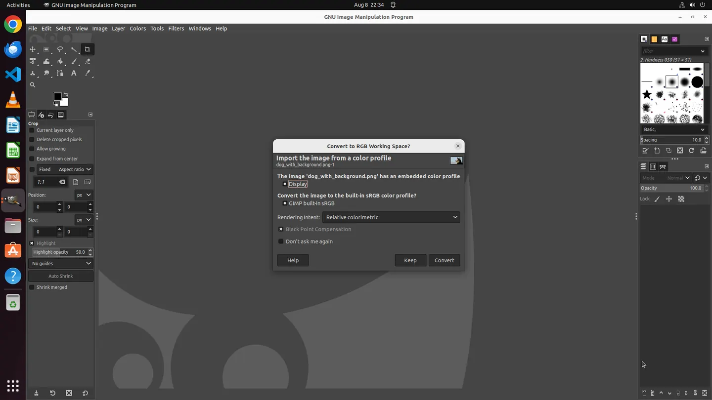

Bounded episodes
The Actor works for a fixed number of steps, then yields control for verification.
The Actor operates a real computer. ARM reads the resulting desktop state and trajectory evidence, then decides whether to stop—or return feedback for another episode.
Open runtime · Isolated desktops · Inspectable trajectories
 Chrome · task state verified
Chrome · task state verified
 GIMP · ARM checkpoint
GIMP · ARM checkpoint
Instead of spending the entire inference budget on independent candidates, ARM checks what actually happened on the desktop and makes the next episode better informed.
The Actor works for a fixed number of steps, then yields control for verification.
ARM evaluates a task checklist against the current GUI and recorded trajectory.
Failed checks become context for the next episode. Success or infeasible ends the loop.
Client calls stay behind the Actor boundary. EnvAdapter owns the isolated computer. Trajectory Recorder turns every action into inspectable evidence.
Every value below comes from the project Q2 experiment summary. These results are not claims about a live official leaderboard.
Sequential feedback spends compute after seeing the real outcome, rather than before it.
The source contains minor annotations such as 469/73.8 and 495/73.7. This page uses the rounded comparison ≈470/73.7.
A real OSWorld GIMP run: one task instruction, five mouse actions, and one evidence-backed success verdict.
